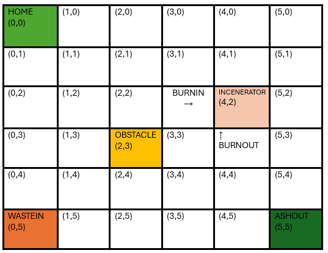

GIT repo: https://github.com/Bostre17/iss24Temafinale
GIT repo: https://github.com/Bostre17/iss24Temafinale
Il progetto prevede lo sviluppo di un sistema di gestione per un servizio di incenerimento rifiuti (Waste Incinerator Service - WIS), che coordina il movimento dei rifiuti e delle ceneri tramite un robot operatore (OpRobot).
Il sistema sarà organizzato in una Service Area con una serie di elementi chiave per la gestione del processo.
Copy here the EXACT text given by the customer.
Per modellare il servizio, è necessario introdurre il concetto di attore, un componente software autonomo in grado di gestire, inviare e ricevere messaggi all'interno di un ambiente distribuito. Per approfondire le funzionalità e le possibili interazioni di un attore, si rimanda a QakActors24.
E' facile pensare la service area come un sistema cartesiano di coordinate Xe Y, per motivi pratici e di semplicità questo spazio usa come unità di misura l'ingombro del DDRRobot fornitoci.
La rappresentazione è puramente un'astrazione, le dimensioni effettive della griglia verranno definite in seguito
Il Sonar e il Led sono dispositivi fisici per cui il committente fornisce software di supporto per il loro utilizzo:
Analogamente all'OpRobot con il DDR robot, è possibile modellare il MonitoringDevice come un attore esterno al sistema, che interagisce con i dispositivi fisici associati.
La distanza DLIMIT sarà definita come una variabile intera e positiva dell'attore.
L'OpRobot si occupa di spostarsi tra le varie aree operative del sistema, raggiungendo le posizioni WASTEIN, BURNIN, BURNOUT, ASHOUT e HOME.
Le sue funzioni principali includono:
È controllato dal WIS, che invia istruzioni al BasicRobot24 per gestirne il movimento e le operazioni.
Per verificare il corretto funzionamento del sistema, sono previsti test sui seguenti aspetti, considerando il movimento come quello di un robot:
Questa sezione sarà completata nelle fasi successive del progetto.
Piani di manutenzione e miglioramenti futuri saranno implementati dopo la fase di testing.
GIT repo: https://github.com/Bostre17/iss24Temafinale